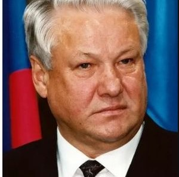

Бори́с
Никола́евич
Е́льцин (1 февраля 1931, село Бутка,
Буткинский район, Уральская область, РСФСР, СССР — 23 апреля 2007, Москва,
Россия) — советский и российский партийный, государственный и политический
деятель. Первый Президент Российской Федерации (1991—1999)[4]; в ноябре 1991 —
июне 1992 года одновременно возглавлял «правительство реформаторов». С марта по
май 1992 года исполнял обязанности министра обороны Российской
Федерации.
Депутат
Совета Союза Верховного Совета СССР 10-11 созывов (1979—1989); член Президиума
Верховного Совета СССР (1984—1988). Народный депутат СССР и член Совета
Национальностей Верховного Совета СССР (1989—1990). Народный депутат РСФСР и
Председатель Верховного Совета РСФСР (1990—1991).
Член
КПСС (1961—1990), член ЦК КПСС (1981—1990); в партии занимал посты первого
секретаря Свердловского обкома КПСС (1976—1985), Секретаря ЦК КПСС (1985—1986) и
первого секретаря Московского горкома КПСС (1985—1987).
Вошёл
в историю как первый всенародно избранный глава России, радикальный реформатор
общественно-политического и экономического устройства
России.
Родился
1 февраля 1931 года в селе Бутка Уральской области (ныне в Талицком районе
Свердловской области) в семье раскулаченных крестьян. Так пишет сам Ельцин в
мемуарах. Право называться родиной Ельцина, однако, оспаривает соседнее село
Басмановское. Как пишет биограф первого президента Борис Минаев, Ельцины
действительно жили в селе Басманово, «но „роддом“, то есть деревенская больница,
находился именно в Бутке», и именно там и появился на свет Борис Ельцин. В
тридцатом году семью «выселили».
Детство
Ельцин провёл в городе Березники Пермской области, там же окончил школу (совр.
школа № 1 имени А. С. Пушкина). Согласно официальной биографии Ельцина и данным
СМИ, успевал в учёбе, был старостой класса, однако имел нарекания по поведению,
был драчлив. Однако в статье Ю. Борисёнка и В. Эрлихмана утверждается, что
Ельцин «не блистал хорошими оценками». После окончания седьмого класса Ельцин
выступил против классной руководительницы, которая била детей и заставляла их
работать у себя дома. За это был исключён из школы с «волчьим билетом», но,
обратившись в горком партии, сумел добиться возможности продолжить учёбу в
другой школе.
Дом
на Карагандинской улице в Казани, в котором в 1934—1937 годах жил Б. Н.
Ельцин
На
левой руке у Ельцина не хватало двух пальцев и фаланги третьего. По версии
Ельцина, он потерял их в результате взрыва гранаты, которую он пытался вскрыть.
Эту версию ставили под сомнение Сергей Кара-Мурза и Юрий Мухин. Из-за отсутствия
пальцев Ельцин не служил в армии.
Согласно
собственноручно заполненной автобиографии в 1949 году поступил в Уральский
политехнический институт им. С. М. Кирова на строительный факультет, в 1955 году
окончил его с квалификацией «инженер-строитель» по специальности «Промышленное и
гражданское строительство». Тема дипломной работы: «Телевизионная башня». В
студенческие годы серьёзно занимался волейболом, выступал за сборную команду
города, стал мастером спорта. В своей автобиографии 8 апреля 1955 года Ельцин
сообщает, что в 1952 году «из-за болезни пропустил год
учебы».
Профессиональная
и партийная деятельность
В
1955 году направлен по распределению в трест «Уралтяжтрубстрой», где за год
освоил несколько строительных специальностей, затем работал на строительстве
разных объектов мастером, начальником участка. В 1957 году становится прорабом
строительного управления треста. В 1961 году вступил в КПСС. В 1963 году
назначен главным инженером Свердловского домостроительного комбината. С 1966
года — директор Свердловского ДСК.
В
1963 на XXIV конференции партийной организации Кировского района города
Свердловска единогласно избран делегатом на городскую конференцию КПСС. На XXV
районной конференции избран членом Кировского райкома КПСС и делегатом на
Свердловскую областную конференцию КПСС.
В
Свердловском обкоме КПСС
В
1968 году переведён на партийную работу в Свердловский обком КПСС, где возглавил
отдел строительства. В 1975 году избран секретарём Свердловского обкома КПСС,
ответственным за промышленное развитие области. Предшественник Б. Ельцина на
посту секретаря Свердловского обкома КПСС Я. П. Рябов рассказывал в
интервью:
Так
получилось, что несколько моих друзей учились вместе с Ельциным. Я решил
спросить их мнение о нём. Они говорили, что он властолюбив, амбициозен, что ради
карьеры готов переступить даже через родную мать. «А если ему дать задание?» —
спрашиваю. Они говорят: «Любое задание начальства он разобьётся в лепёшку, но
выполнит».
В
Верховном Совете СССР
В
1978—1989 — депутат Верховного Совета СССР (член Совета Союза). С 1984 по 1988 —
член Президиума ВС СССР. Кроме того, в 1981 году на XXVI съезде КПСС был избран
членом ЦК КПСС и входил в него до выхода из партии в 1990
году.
В
1985 году, после избрания М. С. Горбачёва Генеральным секретарём ЦК КПСС, был
переведён на работу в Москву (по рекомендации Е. К. Лигачёва), в апреле
возглавил отдел строительства ЦК КПСС, а в июне 1985 года избран секретарём ЦК
КПСС по вопросам строительства.
В
Московском горкоме КПСС
В
декабре 1985 года был рекомендован Политбюро ЦК КПСС на должность первого
секретаря Московского городского комитета (МГК) КПСС. Придя на эту должность,
начал кадровую чистку партийного и советского аппарата столицы, освободив от
занимаемых должностей многих руководящих работников МГК КПСС и первых секретарей
райкомов. Получил известность благодаря личным проверкам магазинов и складов,
использованием общественного транспорта. Организовал в Москве продовольственные
ярмарки. При Ельцине начинает разрабатываться новый Генеральный план развития
Москвы, вводится запрет на снос исторических зданий, начинает отмечаться День
города.
На
XXVII съезде КПСС в феврале 1986 года избран кандидатом в члены Политбюро ЦК
КПСС, оставался в этой должности до 18 февраля 1988 года.
Осенью
1987 года начал публично критиковать руководство партии. 21 октября достаточно
резко выступил на Пленуме ЦК КПСС (критиковал стиль работы некоторых членов
Политбюро, в частности Егора Лигачёва, медленные темпы перестройки, в числе
прочего заявил о зарождении «культа личности» Михаила Горбачёва), после чего
попросил освободить его от обязанностей кандидата в члены Политбюро. После этого
подвергся встречной критике, в том числе со стороны тех, кто его ранее
поддерживал (например, «архитектор перестройки» Александр Яковлев). В конце
концов был вынужден покаяться и признать свои ошибки:
Кроме
некоторых выражений, в целом я с оценкой согласен. То, что я подвёл Центральный
комитет и Московскую городскую организацию, выступив сегодня, — это
ошибка.
Пленум
вынес резолюцию считать выступление Ельцина «политически ошибочным» и предложил
МГК рассмотреть вопрос о переизбрании своего первого секретаря. Стенограмма
выступления Ельцина не была своевременно опубликована в печати, что породило
множество слухов. В «самиздате» появилось несколько подложных вариантов текста,
гораздо более радикальных, чем оригинал. Автором одного из них был главный
редактор «Московской правды» Михаил Полторанин.
3
ноября, по утверждению Александра Хинштейна, Ельцин направил Горбачёву письмо с
просьбой оставить его в прежней должности.
9
ноября в связи с сердечным приступом попал в больницу. По некоторым
свидетельствам (например, свидетельству М. С. Горбачёва, Н. И. Рыжкова и В. И.
Воротникова) — из-за попытки покончить жизнь самоубийством (или симулировать
попытку самоубийства)
11
ноября на Пленуме МГК повторно каялся, признал свои ошибки, но был освобождён от
должности первого секретаря МГК. Не был, однако, полностью разжалован, а остался
в рядах номенклатуры, хотя были предложения направить его послом в какую-нибудь
африканскую страну.
14
января 1988 года Ельцин был назначен первым заместителем председателя Госстроя
СССР — министром СССР.
18
февраля решением Пленума ЦК КПСС он был освобождён от обязанностей кандидата в
члены Политбюро ЦК КПСС (но остался членом ЦК).
Летом
1988 года был избран делегатом XIX Всесоюзной партконференции от карельской
республиканской парторганизации. 1 июля Ельцин выступил на партконференции и
вновь предложил вывести Лигачёва из Политбюро, критиковал привилегии партийной
элиты, утверждал, что в «застое» нельзя винить одного только Брежнева, а
виновато всё Политбюро «как коллективный орган». В заключение Ельцин просил
отменить решение октябрьского пленума ЦК КПСС, признавшего ошибочным его
выступление на пленуме.
Вы
знаете, что моё выступление на октябрьском Пленуме ЦК КПСС было признано
«политически ошибочным». Но вопросы, поднятые там, на пленуме, неоднократно
поднимались прессой, ставились коммунистами. В эти дни все эти вопросы
практически звучали вот с этой трибуны и в докладе, и в выступлениях. Я считаю,
что единственной моей ошибкой в выступлении было то, что я выступил не вовремя —
перед 70-летием Октября.
<…>
Я остро переживаю случившееся и прошу конференцию отменить решение пленума по
этому вопросу. Если сочтёте возможным отменить, тем самым реабилитируете меня в
глазах коммунистов. И это не только личное, это будет в духе перестройки, это
будет демократично и, как мне кажется, поможет ей, добавив уверенности
людям.
Б.
Н. Ельцин 21 февраля 1989 года выступает в Колонном зале Дома Союзов с
предвыборной платформой кандидата в народные депутаты СССР
Избрание
народным депутатом СССР
26
марта 1989 года Ельцин был избран народным депутатом СССР по
национально-территориальному округу № 1 (город Москва), получив 91,53 % голосов
москвичей, при явке почти 90 %. Ельцину противостоял поддерживаемый властями
генеральный директор ЗИЛ Евгений Браков. В связи с избранием Ельцин был
освобожден от обязанностей министра СССР (при этом сохранил пост первого
заместителя Председателя Государственного строительного комитета СССР). Во время
выборов на Съезде Ельцин не прошёл в Верховный Совет, но депутат А. И. Казанник
отказался от своего мандата в пользу Ельцина (в октябре 1993 года Ельцин
назначит его Генеральным прокурором Российской Федерации).
С
июня 1989 года по 26 декабря 1990 года Борис Ельцин — член Совета
Национальностей Верховного Совета СССР[40]. Был избран председателем комитета ВС
СССР по строительству и архитектуре и вошёл в состав Президиума ВС СССР. Один из
руководителей Межрегиональной депутатской группы.
В
1989 году Ельцин стал героем нескольких скандальных происшествий. Летом,
приглашённый в США, он, как утверждалось, выступал в пьяном виде — перепечатка
публикации об этом инциденте из итальянской газеты La Repubblica в «Правде» была
воспринята на родине как провокация партийного руководства против
«инакомыслящего» Ельцина и привела к массовым протестам и отставке главного
редактора газеты В. Г. Афанасьева. Сам Ельцин объяснял своё поведение дозой
снотворного, которую он принял под утро, мучаясь бессонницей.В сентябре с
Ельциным произошёл странный инцидент в Подмосковье, он попал в автомобильную
аварию: 21 сентября автомобиль «Волга», на котором он ехал, столкнулся с
«Жигулями», при этом Ельцин получил ушиб бедра.
4
марта 1990 года Ельцин был избран народным депутатом РСФСР от
Свердловска.
25
апреля 1990 года во время неофициального визита в Испанию Ельцин попал в
авиационную аварию, получил травму позвоночника и был прооперирован. Через месяц
после происшествия, во время выборов председателя Верховного Совета РСФСР, в
прессе появились намёки на то, что авария была организована КГБ СССР.
Высказывалось мнение, что многочисленные слухи, возникшие в связи с этой
аварией, повлияли на исход выборов.
Председатель
Верховного Совета РСФСР
29
мая 1990 года Ельцин был избран председателем Верховного Совета РСФСР (с третьей
попытки, набрав 535 голосов против 467 голосов у «кандидата Кремля» А. В.
Власова).
Под
руководством Ельцина Верховный Совет принял ряд законов, повлиявших на
дальнейшее развитие страны — в том числе, Закон о собственности в
РСФСР.
12
июня 1990 года Съезд народных депутатов РСФСР принял Декларацию о
государственном суверенитете РСФСР, предусматривавшую верховенство российского
законодательства по отношению к союзному. Это резко увеличило политический вес
председателя Верховного Совета РСФСР, игравшего ранее второстепенную, зависимую
роль. День 12 июня в 1991 году стал, согласно постановлению Верховного Совета
РФ, государственным праздником Российской Федерации.
12
июля на XXVIII съезде КПСС Ельцин выступил с критикой партии и её руководителя
Михаила Горбачёва и объявил о своём выходе из КПСС.
В
августе — октябре 1990 года за «парадом суверенитетов» союзных республик
последовал «парад суверенитетов» автономных образований и даже некоторых
регионов в составе РСФСР. Была принята декларация о государственном суверенитете
Карельской АССР, провозглашён государственный суверенитет Коми АССР, Татарской
АССР, Удмуртской и Якутской-Саха АССР, Чукотского автономного округа, Адыгейской
АО (Адыгейской АССР), Бурятской АССР, Башкирской АССР, Калмыцкой АССР, Марийской
АССР, Чувашской АССР, Ямало-Ненецкого автономного округа, Горно-Алтайской АО
(Горно-Алтайской АССР), Иркутской области и т. д. В этих и других документах
того периода республики провозглашались носителями суверенитета. При этом,
однако, вопрос о полной государственной независимости и выходе из состава РСФСР,
как правило, не ставился, отношения с федеральным центром предполагалось в
дальнейшем урегулировать путём заключения с ним договоров.
Ряд
СМИ приписывают Борису Ельцину фразу: «берите столько суверенитета, сколько
сможете проглотить», которую он якобы произнес во время визита в Уфу в августе
1990 года. В оригинале фраза звучала по-иному: «мы говорим Верховному Совету,
правительству Башкирии:вы возьмите ту долю власти, которую сами можете
проглотить».
Президент
СССР М. С. Горбачёв, пытаясь остановить развал страны в декабре 1990 года
предложил проект нового Союзного Договора. 24 декабря 1990 года IV Съезд
народных депутатов СССР постановил считать необходимым сохранение СССР как
обновлённой федерации равноправных суверенных республик, в которой будут в
полной мере обеспечиваться права и свободы человека любой
национальности.
19
февраля 1991 года Борис Ельцин в выступлении по телевидению после событий в Риге
и Вильнюсе, в ходе которых руководство СССР прибегло к военной силе, подверг эти
действия критике и впервые потребовал отставки Михаила Горбачёва и передачи
власти Совету Федерации, состоящему из руководителей союзных республик. Через
два дня на заседании Верховного Совета РСФСР было оглашено «письмо шести»
(заместителей председателя Верховного Совета С. П. Горячевой и Б. М. Исаева,
председателей обеих палат В. Б. Исакова и Р. Г. Абдулатипова и их заместителей
А. А. Вешнякова и В. Г. Сыроватко), которые подвергли критике авторитарный стиль
Ельцина в руководстве работой Верховного Совета. В защиту Ельцина, однако,
активно выступил Р. И. Хасбулатов (первый заместитель председателя), и депутаты
не дали этому обращению хода.
17
марта на Всесоюзном референдуме сохранение и обновление СССР поддержало
большинство граждан, исключая население шести республик (Литва, Эстония, Латвия,
Грузия, Молдавия, Армения), в которых высшие органы власти отказались проводить
референдум. Рабочей группой (с участием РСФСР) в рамках так называемого
новоогарёвского процесса весной — летом 1991 года был разработан проект по
заключению нового союза как мягкой, децентрализованной
федерации.
Президент
РСФСР / Российской Федерации
12
июня 1991 года Ельцин был избран президентом РСФСР, получив 45 552 041 голосов
избирателей, что составило 57,30 процентов от числа принявших участие в
голосовании, и значительно опередив Николая Рыжкова, который, несмотря на
поддержку КПСС, получил всего лишь 16,85 процентов голосов. Вместе с Борисом
Ельциным был избран вице-президент Александр Руцкой. Основными лозунгами
избирательной кампании Ельцина стали борьба с привилегиями номенклатуры и
поддержание суверенитета России в составе СССР.
Это
были первые в истории России всенародные выборы президента (президент СССР
Михаил Горбачёв занял свой пост в результате голосования на Съезде народных
депутатов СССР).
10
июля Борис Ельцин принёс присягу на верность народу России и российской
Конституции и вступил в должность президента РСФСР. После принесения присяги
выступил с программной речью, которую начал энергично и эмоционально, с
пониманием торжественности момента.
Невозможно
передать словами душевное состояние, которое я переживаю в эти минуты. Впервые в
тысячелетней истории России президент торжественно присягает своим согражданам.
Нет выше чести, чем та, которая оказывается человеку народом, нет выше
должности, на которую избирают граждане государства. <…> Я с оптимизмом
смотрю в будущее и готов к энергичным действиям. Великая Россия поднимается с
колен! Мы обязательно превратим её в процветающее, демократическое, миролюбивое,
правовое и суверенное государство. Уже началась многотрудная для всех нас
работа. Перейдя через столько испытаний, ясно представляя свои цели, мы можем
быть твёрдо уверены: Россия возродится!
VI
Съезд народных депутатов и изменения в экономической
политике
6
апреля 1992 года открылся VI Съезд народных депутатов России, который Егор
Гайдар назвал «первой фронтальной атакой на реформы». Предпринятое с начала года
сокращение государственных расходов привело к формированию оппозиции реформам в
лице промышленного и аграрного лобби, имевшего широкое влияние в Верховном
Совете и на Съезде. 11 апреля Съезд принял постановление «О ходе экономической
реформы в Российской Федерации», в котором указал на целый ряд проблем в
экономике и предложил президенту России внести существенные коррективы в тактику
и методы осуществления экономической реформы.
В
ответ правительство во главе с Егором Гайдаром передало президенту заявление об
отставке и огласило его в пресс-центре Съезда. В заявлении, в частности,
говорилось:
Совокупность
требований, заявленных Съездом, обрекает страну на гиперинфляцию, означает
приостановку процесса приватизации и свёртывание аграрной реформы. Предложения
снизить налоги и одновременно увеличить социальные и другие выплаты невыполнимы
и могут привести лишь к развалу финансовой системы. <…> Неизбежным
результатом осуществления решений Съезда будет катастрофическое падение уровня
жизни, голод, социальные потрясения и хаос.<…> Мы не считаем себя вправе
идти по пути безответственного популизма, когда под предлогом защиты населения
происходит его ограбление в результате ускорения инфляции.
15
апреля Съезд пошёл на уступки и принял Декларацию «О поддержке экономической
реформы в Российской Федерации», в которой поддержал действия правительства,
направленные на принципиальные преобразования экономики, а постановление от 11
апреля предложил выполнять «с учётом реально складывающихся экономических и
социальных условий».
Однако
президент и правительство тоже были вынуждены пойти на компромиссы[106].
Выполняя договорённости, достигнутые на Съезде, Борис Ельцин ввёл в
правительство представителей «красных директоров» — Владимира Шумейко, Георгия
Хижу, без ведома Гайдара вице-премьером по топливно-энергетическому комплексу
был назначен глава Газпрома Виктор Черномырдин.
Если
первая попытка финансовой стабилизации, основанная на сокращении государственных
расходов и введении новых налогов, в апреле-мае привела к снижению инфляции, то
под давлением Верховного Совета и директоров предприятий правительство было
вынуждено смягчить жёсткую денежную политику. Как пишет Андрей Нечаев, «к маю
1992 года мы столкнулись с тем, что навязанные нам финансовые обязательства лишь
на треть могли быть покрыты за счёт реальных источников доходов бюджета».
Правительство подняло зарплаты бастующим шахтёрам, по настоянию Верховного
Совета было выделено 600 млрд рублей льготных кредитов на развязку кризиса
неплатеже. В июле сменилось руководство Центрального банка. Новый руководитель
ЦБ Виктор Геращенко не поддерживал курс на сокращение расходов, продвигаемый
Гайдаром, проводил взаимозачёты долгов предприятий, на основе разовой кредитной
эмиссии около 1 трлн рублей. Это давало временный эффект и приводило к
увеличению инфляции. Осенью проблема неплатежей возникла снова. По мнению
Евгения Ясина, «с приходом Геращенко в Центробанк первая попытка финансовой
стабилизации была окончательно сорвана». Летом на увеличении расходов также
сказался сезонный фактор: выделялись кредиты для обеспечения Северного завоза,
Верховный Совет одобрил решение о масштабных кредитах сельхозпроизводителям под
уборку урожая. Ускорился рост денежной массы и инфляции (с 8,6 % в августе до
22,9 % в октябре). С осени правительство было вынуждено вновь резко сокращать
расходы, чтобы не допустить гиперинфляцию. Дефицит бюджета снизился с 10,8 % ВВП
в августе до 4,4 % ВВП в октябре.
Конституционный
кризис (1992—1993)
10
декабря 1992 года, на следующий день после того, как Съезд народных депутатов не
утвердил кандидатуру Егора Гайдара на пост председателя Совета министров, Ельцин
выступил с резкой критикой работы Съезда и попытался сорвать его работу, призвав
своих сторонников покинуть заседание. Начался политический кризис. После
переговоров Ельцина, Руслана Хасбулатова и Валерия Зорькина и многоступенчатого
голосования, Съезд народных депутатов 12 декабря принял постановление о
стабилизации конституционного строя, а председателем правительства был назначен
Виктор Черномырдин.
После
восьмого Съезда народных депутатов, на котором было отменено постановление о
стабилизации конституционного строя и приняты решения, подрывающие
самостоятельность правительства и Центрального банка, 20 марта 1993 года Ельцин,
выступив по телевидению с обращением к народу, объявил о том, что подписал указ
о введении «особого режима управления». На следующий день Верховный Совет
обратился в Конституционный Суд, назвав обращение Ельцина «покушением на
конституционные основы российской государственности». Конституционный Суд
Российской Федерации, ещё не имея подписанного указа, признал действия Ельцина,
связанные с телеобращением, неконституционными, и усмотрел основания для
отрешения его от должности. Верховный Совет созвал IX (Чрезвычайный) Съезд
народных депутатов. Однако, как выяснилось через несколько дней, на самом деле
был подписан другой указ, не содержащий грубых нарушений Конституции. 28 марта
Съезд предпринял попытку отстранить Ельцина от должности президента. Выступая на
митинге на Васильевском спуске в Москве, Ельцин поклялся не выполнять решение
Съезда, если оно всё же будет принято. Однако, за импичмент проголосовали только
617 депутатов из 1033, при необходимых 689 голосах.
На
следующий день после провала попытки импичмента Съезд народных депутатов
назначил на 25 апреля всероссийский референдум по четырём вопросам — о доверии
президенту Ельцину, об одобрении его социально-экономической политики, о
досрочных выборах президента и о досрочных выборах народных депутатов. Борис
Ельцин призвал своих сторонников голосовать «все четыре да», сами же сторонники
склонялись к голосованию «да-да-нет-да». По результатам референдума о доверии
получил 58,7 % голосов избирателей, при этом 53,0 % проголосовали за
экономические реформы. По вопросам о досрочных выборах президента и народных
депутатов «за» проголосовали соответственно 49,5 % и 67,2 % принявших участие в
голосовании, однако, юридически значимых решений по этим вопросам принято не
было (так как, по действовавшим законам, для этого «за» должны были высказаться
больше половины от всех имеющих право голоса. В референдуме приняли участие
64,05 % избирателейПротиворечивые результаты референдума были истолкованы
Ельциным и его окружением в свою пользу.
После
референдума Ельцин сосредоточил усилия на разработке и принятии новой
Конституции. 30 апреля в газете «Известия» был опубликован президентский проект
Конституции, 18 мая было объявлено о начале работы Конституционного Совещания, а
5 июня Конституционное Совещание впервые собралось на заседание в Москве. После
референдума Ельцин практически прекратил все деловые контакты с руководством
Верховного Совета, хотя некоторое время продолжал подписывать некоторые
принимаемые им законы, а также утратил доверие к вице-президенту Александру
Руцкому и освободил его от всех поручений, а 1 сентября — временно отстранил от
должности по подозрению в коррупции, которое через 3 месяца не
подтвердилось
Прекращение
деятельности Съезда народных депутатов и Верховного Совета
Вечером
21 сентября 1993 года Борис Ельцин в телеобращении к народу объявил о том, что
он подписал указ № 1400 «О поэтапной конституционной реформе в Российской
Федерации», предписывающий прекратить деятельность Съезда народных депутатов и
Верховного Совета, и назначить на 11—12 декабря выборы в новый создаваемый
представительный орган власти, Федеральное собрание Российской Федерации.
Конституционный Суд, собравшийся в ночь с 21 на 22 сентября, нашёл в указе
нарушение ряда статей действовавшей в то время Конституции, и установил наличие
оснований для отрешения президента от должности. Верховный Совет, на основании
статей 121. 6 и 121. 11 Конституции (Основного Закона) Российской Федерации —
России (РСФСР), принял постановления о прекращении полномочий президента Ельцина
с 20 часов 00 минут 21 сентября 1993 года после подписания указа № 1400, и о
переходе их к вице-президенту Александру Руцкому. Однако, Борис Ельцин де-факто
продолжал осуществлять полномочия президента России.
С
22 сентября по распоряжению Ельцина здание Верховного Совета было блокировано
милицией и отключено от воды и электроэнергии. Таким образом депутаты оказались
на осадном положении
Верховный
Совет объявил о созыве 22 сентября X (Чрезвычайного) Съезда народных депутатов.
По утверждению спикера Верховного совета Руслана Хасбулатова те органы
исполнительной власти, что подчинились Ельцину, задерживали депутатов из
регионов и препятствовали их прибытию другими способами. Реально Съезд смог
открыться только вечером 23 сентября. Сторонники Ельцина утверждают, что
кворума, для которого требовалось 689 депутатов, на Съезде достигнуто не было.
По утверждению руководства ВС, присутствовало 639 депутатов, президентская
сторона говорила только о 493. Тогда было принято решение лишить депутатского
статуса тех, кто не явился в Белый дом, после чего объявили о достижении
кворума. По другим данным на съезд прибыло 689 человек. Съезд утвердил
постановление парламента о прекращении полномочий президента
Ельцина.
24
сентября на заседании X внеочередного (чрезвычайного) Съезда народных депутатов
было принято постановление № 5807-1 «О политическом положении в Российской
Федерации». В нём действия бывшего президента Ельцина оценивались как
государственный переворот, все правовые акты, подписанные им с 20:00 21 сентября
признавались незаконными, а самому отрешённому от должности президенту было
предложено «не усугублять свою вину перед народом и законом и добровольно
прекратить свои антиконституционные действия».
Съезд
народных депутатов по предложению регионов и председателя Конституционного суда
Валерия Зорькина, принял постановление «О досрочных выборах народных депутатов
Российской Федерации и Президента Российской Федерации», в котором постановил, в
частности, провести указанные выборы не позднее марта 1994 года при условии
нормальной конституционной деятельности органов представительной, исполнительной
и судебной власти, а также обеспечения плюрализма мнений в средствах массовой
информации. Верховному Совету было поручено в месячный срок подготовить
соответствующие нормативные акты, обеспечивающие проведение одновременных
досрочных выборов. Также парламент должен был сам назначить дату проведения
выборов.
27
сентября в интервью телекомпании «Останкино» Ельцин заявил, что против
одновременных досрочных выборов президента и народных депутатов и ни на какие
компромиссы ни с какими органами власти не пойдёт
Противостояние
между Ельциным, верными ему силами охраны порядка и сторонниками Верховного
Совета переросло в вооружённые столкновения. 3 октября Ельцин объявил о введении
чрезвычайного положения. Сторонники Верховного Совета взяли штурмом одно из
зданий мэрии Москвы на Краснопресненской набережной (бывшее здание СЭВа), откуда
сотрудники МВД вели огонь по демонстрантам, подошедшим к зданию парламентаЗатем
сторонники Верховного Совета во главе с Альбертом Макашовым отправились к
телецентру Останкино с целью предоставления им эфира. По невыясненным до конца
причинам, бойцы проправительственного отряда «Витязь», находившиейся в здании
телецентра, открыли огонь по сторонникам парламента. Ельцин, по предложению
заместителя начальника службы безопасности президента Российской Федерации
Геннадия Захарова, отдал приказ о штурме здания Верховного Совета с применением
танков. Ранним утром 4 октября в Москву были введены войска, затем последовал
обстрел Дома Советов танками, а после 17 часов — капитуляция его защитников. В
ходе этих событий с обеих сторон, по данным следствия, погибло 123 человека, 384
получили ранения, среди погибших нет ни одного народного депутата России. Один
из депутатов (Юрий Ельшин), оказывавший помощь раненым, получил лёгкое ранение.
Некоторые народные депутаты и сотрудники аппарата Верховного Совета после выхода
из горящего здания парламента были избиты сотрудниками
милиции.
6
октября 1993 года программа «Вести» телеканала РТР сообщила о выносе из Белого
дома тридцати шести трупов.
7
октября, через 3 дня после штурма Дома Советов, в МВД состоялась
пресс-конференция командующего внутренними войсками Анатолия Куликова и
освобожденного от должности Руцким, но продолжившего занимать пост министра
внутренних дел Виктора Ерина. В ходе этой пресс-конференции журналистам
сообщили, что из здания Верховного Совета было вывезено 49 трупов. Утром того же
дня следственная группа Генеральной прокуратуры была допущена в Дом Советов.
Однако, следователи не обнаружили там трупов (к этому моменту их уже вывезли) и
поэтому в материалах следствия ничего не говорится о погибших в здании
парламента. Информацию о том, что были погибшие внутри Дома Советов,
подтверждает письмо министра здравоохранения Российской Федерации Эдуарда
Нечаева на имя Виктора Черномырдина № 01-1/3016-3 от 6 октября 1993 года, в
котором говорится, что «в настоящее время проводятся работы по извлечению и
опознанию погибших из Дома Советов», а также признание коменданта захваченного
здания парламента генерал-лейтенанта Аркадия Баскаева, о том, что в период с 18
часов 4 октября 1993 года «20-25 раненных и убитых было вывезено бригадами
„скорой помощи“ из здания»
После
роспуска Съезда и парламента Ельцин на некоторое время сосредоточил в своих
руках всю полноту власти и принимает ряд решений: об отставке Руцкого с поста
вице-президента(согласно статье 121. 10 действовавшей Конституции,
вице-президент мог быть отрешён от должности только Съездом народных депутатов
на основании заключения Конституционного суда), о приостановлении деятельности
Конституционного суда, о прекращении деятельности Советов всех уровней и
изменении системы местного самоуправления, о назначении выборов в Совет
Федерации и всенародного голосования, а также своими указами отменяет и изменяет
ряд положений действующих законов.
В
связи с этим, некоторые известные юристы (включая председателя КС, доктора
юридических наук проф. Валерия Зорькина), государственные деятели, политологи,
политики, журналисты (в первую очередь — из числа политических противников
Ельцина) отмечали, что в стране установлена диктатура. Вот что пишет, например,
бывший председатель Верховного Совета и активный участник событий (из числа
противников Ельцина) Руслан Хасбулатов:
В
феврале 1994 года участники событий выпущены согласно постановлению
Государственной Думы об амнистии (все они, кроме Руцкого, согласились на
амнистию, хотя и не были осуждены). Ельцин требовал не допустить проведения
амнистии. В докладе комиссии Госдумы по дополнительному изучению и анализу
событий 21 сентября — 5 октября 1993 года, со ссылкой на бывшего члена
президентского совета, назначенного 5 октября Ельциным на должность Генерального
прокурора Алексея Казанника, утверждается, что Ельцин и его окружение предлагали
Казаннику судить Руцкого, Хасбулатова и других лиц, выступивших против разгона
Съезда и Верховного Совета, по ст. 102 УК РСФСР (Умышленное убийство при
отягчающих обстоятельствах), которая предусматривала смертную казнь. Казанник в
ответ сказал Ельцину, что нет юридических оснований для применения данной
статьи. Данный факт подтверждает в своих воспоминаниях
Руцкой.
По
утверждению одного из защитников Белого дома, народного депутата России Ильи
Константинова: «Негласный приказ Ельцина о ликвидации лидеров оппозиции
существовал, и это не миф. Ельцин хотел, но не мог добить оппозицию, потому что
исполнители не хотели брать на себя лишнюю кровь. Коржаков пишет о том же, что
не хотел никого убивать. Если бы у Бориса Николаевича была возможность, зная его
норов, можно предположить, что он со многими расправился бы. Ещё 4 октября было
отдано устное распоряжение ликвидировать с десяток человек, в том числе и
меня.»
В
сентябре 1995 года уголовное дело № 18/123669-93 по событиям 3-4 октября 1993
года было прекращено. По мнению бывшего руководителя следственной группы Леонида
Прошкина, амнистия, закрывшая данное уголовное дело, устраивала всех потому, что
вопреки воле руководства, следователи Генеральной прокуратуры расследовали
действия не только сторонников Верховного Совета, но и войск, выступавших на
стороне Ельцина, которые во многом повинны в сложившейся ситуации и в тяжких
последствиях происшедшего. Также Прошкин заявил, что администрация Ельцина
оказывала давление на Генпрокуратуру, от следователей прятали
улики.
С
юридической точки зрения события октября 1993 года противоречили действовавшей
на тот момент Конституции. До этих событий между президентом и Верховным Советом
возникли серьёзные разногласия. Ещё в марте 1993 года Ельцин планировал ввести
так называемый ОПУС (особый порядок управления страной) в том случае, если
депутаты выскажут недоверие президенту. Однако этого не
понадобилось.
Конституционная
реформа
12
декабря 1993 года состоялись выборы в Совет Федерации и в Государственную Думу,
а также всенародный референдум о принятии проекта новой Конституции. 20 декабря
ЦИК России объявил результаты референдума: «за» проголосовало 32,9 млн
избирателей (58,4 % активных избирателей), против — 23,4 млн (41,6 % активных
избирателей). Конституция была принята, так как в соответствии с действующим при
проведении референдума указом Президента Ельцина от 15 октября 1993 № 1633 «О
проведении всенародного голосования по проекту Конституции Российской Федерации»
для вступления в силу новой Конституции необходимо абсолютное большинство
голосов. Впоследствии были попытки оспорить результаты этого голосования в
Конституционном Суде Российской Федерации, однако Суд отказал в рассмотрении
дела.
Новая
Конституция Российской Федерации предоставила Президенту значительные
полномочия, в то время как полномочия Парламента были значительно сокращены.
Конституция после опубликования 25 декабря в «Российской газете» вступила в
силу. 11 января 1994 года начали работу обе палаты Федерального Собрания,
конституционный кризис закончился.
В
начале 1994 года Ельцин инициировал подписание договора об общественном согласии
и договора о разграничении полномочий с Татарстаном, а затем — и с другими
субъектами Федерации.
Чеченский
конфликт
Весной
1991 года, будучи Председателем Верховного Совета РСФСР и кандидатом в
президенты России, Ельцин в рамках приуроченной к выборам деловой поездки по
России посетил Чечено-Ингушетию. Он в общих чертах выразил поддержку
суверенитету республики, повторив свой известный тезис: «Берите столько
суверенитета, сколько сможете понести»[179]. В отдельных автономиях это
восприняли как призыв к действию. В июле 1991 года мятежный генерал Джохар
Дудаев провозгласил независимую Чеченскую Республику
Нохчи-Чо.
В
сентябре 1991 года люди Дудаева разгромили в Грозном Верховный Совет
Чечено-Ингушетии, председателем которого был сторонник ГКЧП Докку Завгаев.
Председатель Верховного Совета России Руслан Хасбулатов после этого отправил им
телеграмму «С удовольствием узнал об отставке ВС республики». Некоторое время
Ельцин закрывал глаза на происходящее в кавказском регионе. В результате, после
распада СССР, начался расцвет сепаратистских настроений в некоторых автономных
республиках внутри России. После распада СССР Джохар Дудаев объявил о выходе
Чечни из состава Российской Федерации и о создании Республики
Ичкерия.
Даже
после того, как Дудаев прекратил платить налоги в общий бюджет и запретил
сотрудникам российских спецслужб въезд в республику, федеральный центр
официально продолжал перечислять Дудаеву деньги. В 1993 году на Калининградскую
область было выделено 140 млн рублей, на Чечню 10,5 млрд
рублей.
Российская
нефть продолжала поступать в Чечню до 1994 года. Дудаев за неё не платил, а
перепродавал за рубеж. Также Дудаеву досталось много оружия: 2 пусковые ракетные
установки сухопутных войск, 42 танка, 34 БМП, 14 БТР, 14 легкобронированных
тягача, 260 самолётов, 57 тысяч единиц стрелковой техники и много другого
оружияТак, представитель партии «Яблоко» в 1999 году обвинила Ельцина в том, что
в Чеченской республике имеются многочисленные случаи похищения людей: «Он,
Президент Ельцин, виновен в том, что в год, когда все мировое сообщество
отмечало 50-летие Декларации прав человека и он, Президент Ельцин, объявил в
России год защиты прав человека, в России на рубеже третьего тысячелетия
возрождена работорговля, возрождено крепостное право. Я имею в виду тех 500
наших ребят, которые пленены и каждый день это количество пленённых, к
сожалению, не уменьшается, а возрастает… Это он, Президент Ельцин, виноват в
том, что одной из моих избирательниц в День праздника международной солидарности
трудящихся позвонили из Чечни, из Грозного, и предложили выкупить своего сына за
30 тысяч долларов, либо обменять на одного из пленённых чеченцев в российских
тюрьмах, осуждённых чеченцев».
Москва
негласно поддерживала антидудаевскую оппозицию, но не вмешивалась в гражданскую
войну, начавшуюся в автономии. Осенью 1994 года вооруженная оппозиция
предприняла очередную попытку штурма Грозного, которая потерпела провал,
несмотря на поддержку ельцинских спецслужб. После этого Ельцин принял решение: в
Чечню будут введены федеральные войска. Последующие события в Кремле назвали
«восстановлением конституционного порядка в Чеченской
Республике».
30
ноября 1994 года Б. Н. Ельцин принял решение о вводе войск в Чечню и подписал
секретный указ № 2137 «О мероприятиях по восстановлению конституционной
законности и правопорядка на территории Чеченской Республики», начался чеченский
конфликт.
11
декабря 1994 года на основании указа Ельцина «О мерах по пресечению деятельности
незаконных вооружённых формирований на территории Чеченской Республики и в зоне
осетино-ингушского конфликта» начался ввод войск в Чечню. Многие непродуманные
действия привели к большим жертвам как среди военного, так и среди гражданского
населения: десятки тысяч человек погибли и сотни тысяч были ранены. Часто
происходило так, что во время военной операции или незадолго до неё из Москвы
приходил приказ об отбое. Это давало возможность чеченским боевикам
перегруппировать свои силы. Первый штурм Грозного был непродуманным и привёл к
большим жертвам: погибло и пропало без вести свыше 1500 человек, в плен попало
100 российских военнослужащих.
В
июне 1995 года, во время захвата отрядом боевиков под руководством Ш. Басаева
больницы и родильного дома в Будённовске, Ельцин находился в Канаде, и решил не
прекращать поездку, предоставив возможность Черномырдину урегулировать ситуацию
и вести переговоры с боевиками, вернулся только после завершения всех событий,
уволил руководителей ряда силовых ведомств и губернатора Ставропольского края. В
1995 году в Конституционном Суде РФ законность указов № 2137 и № 1833 («Об
основных положениях военной доктрины Российской Федерации» в части, касающейся
использования Вооружённых Сил РФ при разрешении внутренних конфликтов) была
оспорена группой депутатов Государственной Думы и Совета Федерации. По мнению
Совета Федерации, оспариваемые им акты составили единую систему и привели к
неправомерному применению Вооружённых Сил РФ, поскольку их использование на
территории Российской Федерации, а также иные предписанные в этих актах меры
юридически возможны лишь в рамках чрезвычайного или военного положения. В
запросе подчёркивается, что результатом этих мер явились незаконные ограничения
и массовые нарушения конституционных прав и свобод граждан. По мнению группы
депутатов Государственной Думы использование оспоренных ими актов на территории
ЧР, повлёкшее значительные жертвы среди гражданского населения, противоречит
Конституции РФ и международным обязательствам, принятым на себя Российской
Федерацией. Конституционный Суд прекратил производство по делу о соответствии
указа № 2137 Конституции Российской Федерации без рассмотрения по существу,
поскольку этот документ был признан утратившим силу 11 декабря 1994
года.
В
августе 1996 года чеченские боевики выбили федеральные войска из Грозного. После
этого были подписаны Хасавюртовские соглашения, которые многими рассматриваются
как предательские.
Президентские
выборы 1996 года
По
утверждению бывшего главы администрации президента Сергея Филатова, изначально
Ельцин не планировал участвовать в президентских выборах 1996 года, но из-за
победы КПРФ на выборах в Госдуму 1995 года изменил своё решение: «В августе 1995
года у нас с президентом состоялся серьезный разговор на эту тему. Он тогда
сказал мне, что не хочет идти на второй срок, что устал и очень соскучился по
семье. Я ему возразил: „Борис Николаевич, но вы же понимаете, что если не вы, то
будет Зюганов“. <…>Как известно, на парламентских выборах 1995 года
коммунисты одержали победу. Ельцин вызвал меня к себе 4 января 1996 года и
заявил: „Выборы в Госдуму мы просрали. Там теперь засилье коммунистов. Я не
хотел идти на президентские выборы, но теперь иначе
никак“.».
К
началу 1996 года Ельцин из-за неудач и ошибок экономической реформы и войны в
Чечне потерял былую популярность, и его рейтинг сильно упал (до 3 %); тем не
менее, он решил баллотироваться на второй срок, о чём объявил 15 февраля в
Екатеринбурге (хотя ранее неоднократно заверял, что на второй срок
баллотироваться не будет). Главным оппонентом Ельцина считался лидер КПРФ
Геннадий Зюганов, который выступал за изменение конституционного строя,
пересмотр экономической политики, резко критиковал курс Ельцина и имел
достаточно высокий рейтинг.
В
марте 1996 года, после принятия Госдумой постановления о признании
недействительным беловежского соглашения в части прекращения существования СССР,
Ельцин поручил подготовить указы о роспуске Думы, о переносе выборов президента
и о запрете КПРФ. Однако, Анатолий Чубайс убедил Ельцина отказаться от
реализации этих планов
Во
время избирательной кампании Ельцин активизировался, стал ездить по стране с
выступлениями, посетил многие регионы, включая Чечню. Избирательный штаб Ельцина
развернул активную агитационно-рекламную кампанию под лозунгом «Голосуй или
проиграешь», после чего разрыв в рейтинге между Зюгановым и Ельциным стал
стремительно сокращаться. Незадолго до выборов был принят ряд популистских
законодательных актов (например, указ Ельцина об отмене с 2000 года призыва в
Вооружённые силы Российской Федерации; вскоре этот указ был Ельциным изменён
таким образом, что из него исчезли упоминания о переходе на контрактную основу,
и о сроках перехода). 28 мая Ельцин и Виктор Черномырдин провели переговоры с
чеченской делегацией во главе с Зелимханом Яндарбиевым и подписали соглашение о
прекращении огня. Избирательная кампания привела к поляризации общества,
разделению его на сторонников советского строя и сторонников существующего
строя. 9 июня Ельцин заявил о том, что у него есть на примете наследники на 2000
год, которые «бурно растут»[192].
Ряд
журналистов, политологов и историков (в том числе, д. и. н. Вячеслав Никонов,
бывший в то время заместителем председателя «Общероссийского движения поддержки
Б. Н. Ельцина» и возглавлявший пресс-центр избирательного штаба Ельцина[193])
считают, что кампанию 1996 года нельзя назвать демократическими выборами, из-за
широкого использования «административного ресурса» («по полной программе» — В.
Никонов), многократного превышения избирательным штабом Ельцина установленного
лимита на затраченные средства, фальсификаций, а также из-за того, что
практически все СМИ, за исключением нескольких выходивших небольшими тиражами
коммунистических газет, открыто поддерживали Ельцина.
По
итогам первого тура голосования 16 июня 1996 года Ельцин набрал 35,28 % голосов
избирателей и вышел во второй тур выборов, опередив Зюганова, который получил
32,03 %. Александр Лебедь получил 14,52 %, а после первого тура Ельцин назначил
его секретарем Совета безопасности и произвёл ряд кадровых перестановок в
Правительстве и силовых структурах. Во втором туре 3 июля 1996 года Ельцин
получил 53,82 % голосов, уверенно опередив Зюганова, который получил лишь 40,31
%.
По
заявлению Сергея Бабурина, факт фальсификации итогов выборов признал президент
РФ в 2008—2012 годах Дмитрий Медведев, который во время встречи с
представителями незарегистрированных партий 20 февраля 2012 года якобы заявил:
«Вряд ли у кого есть сомнения, кто победил на выборах президента 1996 года. Это
не был Борис Николаевич Ельцин». В администрации президента заявили, что ничего
подобного Медведев не говорил.
Между
первым и вторым туром голосования Ельцин был госпитализирован с инфарктом,
однако сумел скрыть этот факт от избирателей. Он не показывался на публике,
однако по телевидению показали несколько снятых за несколько месяцев до этого,
но не выходивших ранее в эфир видеозаписей встреч Ельцина, которые были призваны
продемонстрировать его «высокий жизненный тонус». 3 июля Ельцин появился на
избирательном участке санатория в Барвихе. От голосования по месту жительства на
Осенней улице в Москве Ельцин отказался, опасаясь, что не выдержит долгого
прохода по улице, лестнице и коридору этого участка.
Второй
срок президента Ельцина
После
выборов Б. Н. Ельцин надолго выключился из управления страной из-за плохого
состояния здоровья и некоторое время не появлялся перед избирателями.Он появился
на публике только на церемонии инаугурации 9 августа, которая прошла по сильно
сокращённой процедуре из-за плохого состояния здоровья
Ельцина.
На
высшие государственные должности были назначены лица, возглавлявшие и
финансировавшие предвыборную кампанию Ельцина: Анатолий Чубайс стал
руководителем администрации президента РФ, Владимир Потанин — первым
заместителем председателя правительства РФ, Борис Березовский — заместителем
секретаря Совбеза РФ
В
августе 1996 года санкционировал Хасавюртовские соглашения, в октябре принял
решение об освобождении А. И. Лебедя от всех должностей. 5 ноября 1996 года
Ельцину была проведена операция аортокоронарного шунтирования сердца, во время
которой обязанности Президента исполнял В. С. Черномырдин. К работе Б. Н. Ельцин
вернулся только в начале 1997 года.
В
1997 году Б. Н. Ельцин подписал указ о деноминации рубля, провёл в Москве
переговоры с А. А. Масхадовым и подписал соглашение о мире и основных принципах
взаимоотношения с Чеченской Республикой. В марте 1998 года объявил об отставке
Правительства Черномырдина и с третьей попытки, под угрозой роспуска
Государственной Думы, провёл кандидатуру С. В. Кириенко. После экономического
кризиса августа 1998 года, когда, через два дня после решительного заявления
Ельцина по телевидению о том, что девальвации рубля не будет, рубль был
девальвирован и обесценился в 4 раза, отправил в отставку Правительство Кириенко
и предложил вернуть Черномырдина. 21 августа 1998 года на заседании Госдумы
большинство депутатов (248 из 450) призвали Ельцина добровольно уйти в отставку,
в его поддержку выступили лишь 32 депутата. В сентябре 1998 года с согласия
Государственной Думы Борис Ельцин назначил Е. М. Примакова на должность
председателя правительства.
В
мае 1999 года Государственная Дума безуспешно пыталась поставить вопрос об
отрешении Ельцина от должности (пять обвинений, сформулированные инициаторами
импичмента, в основном касались действий Ельцина во время первого срока). Перед
голосованием по импичменту Ельцин отправил в отставку Правительство Примакова,
затем с согласия Государственной Думы назначил С. В. Степашина Председателем
Правительства, однако в августе отправил в отставку и его, представив на
утверждение кандидатуру В. В. Путина, мало известного в то время, и объявил его
своим преемником. После обострения ситуации в Чечне, нападения на Дагестан,
взрывов жилых домов в Москве, Буйнакске и Волгодонске Б. Н. Ельцин по
предложению В. В. Путина принял решение о проведении в Чечне серии
контртеррористических операций. Популярность Путина возросла, и в конце 1999
года Ельцин принял решение об отставке, оставив Путина исполняющим обязанности
главы государства.
Отставка
31
декабря 1999 в 12 часов дня по московскому времени (что было повторено по
основным телеканалам за несколько минут до полуночи, перед новогодним
телеобращением) Б. Н. Ельцин объявил об отставке с поста президента Российской
Федерации:
Ельцин
пояснил, что уходит «не по состоянию здоровья, а по совокупности всех проблем»,
и попросил прощения у граждан России.
Исполняющим
обязанности президента был назначен Председатель Правительства В. В. Путин,
который сразу же после заявления Б. Н. Ельцина о собственной отставке обратился
с новогодним обращением к гражданам России. В. В. Путин в тот же день подписал
указ, гарантирующий Ельцину защиту от судебного преследования, а также
значительные материальные льготы ему и его семье.
Итоги
Критика
1998
год. Пикет в поддержку требований бастующих шахтёров и учёных, работников ВПК,
медиков и учителей, лишившихся социальной поддержки. Участники пикета выразили
недоверие президенту Ельцину, призывали к смене правительства. Лозунги на
плакатах: «Власть — народу!», «Б. Ельцина — в отставку!»
В
годы президентства Ельцин подвергался критике, в основном связанной с общими
негативными тенденциями развития страны в 1990-е годы: спадом в экономике,
резким снижением уровня жизни, отказом государства от социальных обязательств,
снижением численности населения и обострением социальных проблем. Большинство
этих процессов было запущено ещё в конце 1980-х годов и было вызвано кризисом
советской экономической системы. В то же время ряд исследователей отмечают, что
при большей компетентности руководства страны даже в условиях неблагоприятной
конъюнктуры (падение цен на нефть) можно было избежать столь масштабных
экономических (ВВП России в 1990-98 гг. сократился на 40 %) и социальных
потрясений. В годы президентства Ельцина (особенно, во второй половине 1990-х)
его часто обвиняли в фактической передаче основных рычагов управления экономикой
в руки группы влиятельных предпринимателей (т. н. олигархов) и коррумпированной
верхушки госаппарата, а вся экономическая политика сводилась к лоббированию
интересов той или иной группы лиц в зависимости от их текущего
влияния.
К
концу 1992 года резко увеличилась дифференциация жителей на богатых и бедных. За
чертой бедности оказалось 44 % населения.
Вот
как описывает события того времени американский политолог Збигнев
Бжезинский:
« В то время
как прославляли Ельцина, а Америка и Европа заключали в объятия Россию с её
политическим хаосом, увидев в нем братскую демократию, российское общество
погружалось в беспрецедентную бедность. К 1992 году экономические условия уже
были сравнимы с тем, что было в годы Великой депрессии. Ещё больше ухудшала дело
целая стая западных, большей частью американских, экономических «консультантов»,
которые слишком часто вступали в сговор с российскими «реформаторами» в целях
быстрого самообогащения путём «приватизации» российской промышленности и
особенно энергетических ресурсов. Хаос и коррупция превращали в насмешку
российские и американские заявления о «новой демократии» в
России.»
К
1996 году промышленное производство сократилось на 50 %, сельскохозяйственное —
на треть. Потери ВВП составили примерно 40 %.
Спад
промышленного производства был неравномернымОтносительно благополучная ситуация
наблюдалась в топливно-энергетическом комплексе, чёрной металлургии. Иными
словами, чем более сырьевой характер имела отрасль, тем меньший спад был в
производстве продукции. Наиболее сильно пострадало машиностроение и
высокотехнологичные отрасли. Объём продукции лёгкой промышленности сократился на
90 %.
Почти
по всем показателям произошло сокращение в десяткисотнии даже тысячи
раз
комбайны
— в 13 раз
тракторы
— в 14 раз
металлорежущие
станки — в 14 раз
видеомагнитофоны
— в 87 раз
магнитофоны
— в 1065 раз
В
структуре промышленности произошли значительные изменения, имеющие негативный
характер. Так, они выразились в значительном увеличении удельного веса
добывающих отраслей и снижении доли машиностроения и лёгкой
промышленности.
В
структуре экспорта резко выросла доля сырья: если в 1990 году она составляла 60
%, то в 1995 году увеличилась до 85 %. Экспорт высокотехнологичной продукции
сократился в 7 раз
Производство
сельскохозяйственной продукции сократилось примерно на треть. Если в 1990 году
валовый сбор зерна составил 116 млн тонн, то в 1998 году был зафиксирован
рекордно низкий урожай — менее 48 миллионов тонн. Поголовье крупного рогатого
скота упало с 57 млн в 1990 году до 28 млн в 1999 году овец — с 58 до 14 млн
соответственно. В результате приватизации, проведённой в 1992—1994 годах,
значительная часть государственного имущества перешла в руки узкого круга людей,
так как многие не понимали, что делать с ваучерами. По бросовым ценам
продавались предприятия стратегического значения: например, завод ЗИЛ был продан
за 250 млн долларов, в то время как его цена, по исследованиям экспертов,
составляла не менее миллиарда долларов.
Резко
возрос внешний долг России. В 1998 году он составил 146,4 % ВВП, что стало одной
из причин дефолта. Дефолт привёл к обнищанию большей части населения, потере
доверия населения к государству, падению уровня жизни. По оценкам экспертов
дефолт наиболее сильно ударил по среднему классу.
В
1999 году думская комиссия по импичменту заявила, что Ельцин сознательно
проводил политику, направленную на ухудшение уровня жизни граждан, обвинив
президента в геноциде
Тяжёлые
условия жизни народа России и значительное сокращение его численности явились
следствием тех мер, которые были осуществлены в период с 1992 года под
руководством и при активном участии президента Ельцина… Есть серьёзные основания
считать, что сокращение численности населения также охватывалось намерением
президента. Стремясь в конечном итоге добиться изменений в стране
социально-экономического уклада и обеспечить с помощью нарождающегося класса
частных собственников укрепления своей политической власти, президент Ельцин
сознательно шёл на ухудшение жизненных условий российских граждан, с
неизбежностью влекущее повышение смертности населения и сокращение его
рождаемости…
При
этом член комиссии депутат от КПРФ Виктор Илюхин заявил: «Ельцин осознанно не
допускал хотя бы минимального улучшения материального состояния вымирающих
народов России».
Однако,
руководитель центра демографии и экологии человека, Анатолий Вишневский
охарактеризовал это утверждение как миф указав на то, что в 90-е не произошло
ничего особенного, что могло повлиять на демографию, а увеличение показателей
смертности связано с тем, что её сравнивают с временами Горбачёва, когда она
сильно снизилась в результате антиалкогольной кампании.
Обвинения
в разрушении обороноспособности страны
8
мая 1992 года была пересмотрена концепция конверсии. В новой редакции концепции
60 % оборонных предприятий переходили на самофинансирование. Конверсия стала
идти очень быстрыми темпами, в результате чего государственный оборонный заказ
уменьшился с 1991 по 1995 год в 5 раз.
В
1999 году депутат от фракции Яблоко А. Г. Арбатов заявил, что с 1992 года
началось резкое сокращение финансирования расходов на оборону, которое не
сопровождалось преобразованиями в армии в ВПК. По словам Арбатова, до 1997 года
военная реформа была «профанацией», а после дефолта 1998 года, «в реальном
исчислении за период 1998—1999 годов военный бюджет сократился втрое». Арбатов
сказал, что вина в этом лежит на Ельцине: «ни в какой иной области Президент не
сосредоточил в своих руках столь огромных полномочий, как в управлении силовыми
структурами. И ни в одной из них результаты не были столь плачевны». При этом
Арбатов отметил, что Ельцин должен нести моральную, а не юридическую
ответственность.
Сильнее
всего сократилось население Чукотского автономного округа и Магаданской области,
где убыль населения составила за 1991—1994 годы 35,1 % и 26,5 %
соответственно.
Внешняя
политика
Внешняя
политика Ельцина имела целью признание России как суверенного государства и была
направлена с одной стороны на налаживание отношений со странами Запада и
преодоление последствий холодной войны, с другой стороны — на построение новых
отношений с бывшими советскими республиками, большинство из которых стали
участниками СНГ.
24
декабря 1993 года Ельцин был избран председателем Совета глав государств СНГ. Во
время правления Б. Н. Ельцина саммиты глав государств СНГ проводились несколько
раз в год. В марте 1996 года Ельцин вместе с президентом Белоруссии А. Г.
Лукашенко, президентом Казахстана Н. А. Назарбаевым и президентом Киргизии А. А.
Акаевым заключил договор об углублении экономической и гуманитарной интеграции,
а в апреле 1996 года — договор о союзе России и Белоруссии. Это объединение
несколько раз меняло название и статус, но до сих пор полностью не реализовано и
существует больше «на бумаге». В последние годы правления выступал за создание
единого экономического пространства.
В
конце января 1992 Борис Ельцин выступил с инициативами по разоружению и заявил,
что отныне оружие бывшего СССР не будет нацелено на города
США.
В
1993 году, находясь с визитом в Польше, Борис Ельцин подписал польско-российскую
декларацию, в которой «с пониманием» отнёсся к решению Польши вступить в НАТО. В
декларации говорилось, что такое решение не противоречит интересам России.
Подобные же заявления были сделаны Ельциным в Словакии и
Чехии.
Строуб
Тэлбот, первый заместитель Государственного секретаря США в 1994—2001,
непосредственный участник переговоров, в своих мемуарах указывал на то, что в
своей внешней политике «Ельцин соглашался на любые уступки, главное — успеть
между стаканами…». Именно страстью Б. Н. Ельцина к спиртному и объясняется успех
Б. Клинтона в достижении своих политических целей. Вот что об этом пишет в своей
книге Тэлбот:
Клинтон
видел в Ельцине политического лидера, полностью сосредоточенного на одной
крупной задаче, — вогнать кол в сердце старой советской системы. Поддержать
Ельцина так, чтобы он преуспел в решении этой задачи, было, в глазах Клинтона (и
моих собственных) важнейшей целью, оправдывавшей необходимость смириться со
многими куда менее благородными, а порой и просто глупыми вещами. Кроме того,
дружба Клинтона и Ельцина сделала возможным для Соединённых Штатов достижение
конкретных, трудных целей, которые не могли быть достигнуты через какие-либо
другие каналы: ликвидация ядерного оружия на Украине, вывод российских войск из
Балтии, получение согласия России на расширение НАТО, вовлечение России в
миротворческую миссию на Балканах.
Известными
внешнеполитическими шагами Ельцина были также следующие:
Вывод
российских войск из Германии;
Выступал
против бомбёжки Югославии, грозился «перенаправить» российские ракеты на
США.
Смерть
и похороны
Борис
Ельцин скончался 23 апреля 2007 года в 15:45 по московскому времени в
Центральной клинической больнице в результате остановки сердца, вызванной
прогрессирующей сердечно-сосудистой, а затем — полиорганной недостаточностью, то
есть нарушением функций многих внутренних органов, вызванным заболеванием
сердечно-сосудистой системы — сообщил в интервью РИА Новости руководитель
Медцентра Управления делами Президента России Сергей Миронов[230]. Одновременно
в новостной телепрограмме «Вести» он сообщил другую причину смерти
экс-президента: «Ельцин перенёс довольно выраженную катарально-вирусную инфекцию
(простуду), которая очень сильно ударила по всем органам и системам», Ельцин был
госпитализирован за 12 дней до смерти[231]. Однако, по словам кардиохирурга
Рената Акчурина, который проводил операцию экс-президенту, смерть Ельцина «ничто
не предвещало». По желанию родственников Бориса Ельцина вскрытие тела не
проводилось.
Б.
Н. Ельцин был отпет в храме Христа Спасителя, который был открыт всю ночь с 24
на 25 апреля для того, чтобы все желающие могли попрощаться с экс-президентом
России. «Когда-нибудь история даст почившему беспристрастную оценку», — отметил
патриарх Московский Алексий II, не участвовавший в отпевании и похоронах. Есть
мнение, что отпевание проходило не полностью по церковным канонам — чин
отпевания должен включать слова «раб Божий», однако Ельцина отпевали как
«новопреставленного первого президента России Бориса
Николаевича».
Ельцин
был похоронен 25 апреля на Новодевичьем кладбище с воинскими почестями.
Трансляцию похорон вели все государственные каналы в прямом
эфире.
Оценки
Бориса Ельцина
Демографический
кризис в Российской Федерации Динамика численности родившихся и умерших в России
в 1990—2009 годах, в млн человек
Отношение
к Ельцину в России
По
данным «Фонда Общественное Мнение», отрицательно оценивают историческую роль
Ельцина 41 % жителей России, положительно — 40 % (в 2000 году, сразу после
отставки, это соотношение составляло 67 % против 18 %)
По
данным «Левада-Центра», негативно оценивали итоги его правления 67 % в 2000 году
и 70 % — в 2006, положительно 15 % и 13 % соответственно.
Мнения
российских властей
В
2006 г. президент России В. Путин заявил: «Можно как угодно оценивать
деятельность первого президента. Но, безусловно, именно в то время, когда Борис
Николаевич Ельцин возглавлял Россию, народ нашей страны, граждане России,
получили главное, ради чего все эти преобразования проводились, — свободу. Это
огромная историческая заслуга Бориса Николаевича… Как бы действовал каждый из
нас, в том числе и я, в тех условиях можно только догадываться», а в 2011 г. он
отметил, что: «Ельцин сердцем верил в идеалы, которые отстаивал… Сегодня в этом
зале собрались очень разные люди, но все мы верим в Россию, стремимся строить
современную, уверенную в себе страну, о которой и мечтал Борис Николаевич
Ельцин».
В
2011 г. президент России Д. Медведев отметил: «Непредвзятый внимательный
читатель не может не оценить того прорыва, который был совершен в 90-е годы…
Современная Россия должна быть благодарна Борису Ельцину за проведённые им
преобразования».
В
2011 г. глава президентской администрации С. Нарышкин заявил: «С годами значение
и мощь Бориса Николаевича как политического лидера стали только отчётливее.
Новой России досталось трудное наследство. Надо было не только преодолевать
тяжелейшие проблемы, но и создавать российскую государственность. Роль первого
президента была ключевой: он взял на себя весь груз ответственности. Нашими
сегодняшними достижениями мы во многом обязаны первому президенту
России».
В
2011 г. спецпредставитель президента по международному культурному
сотрудничеству М. Швыдкой заявил: «Значение Бориса Николаевича невозможно
переоценить, 1990-е годы предопределили 2000-е, Борис Николаевич был соразмерен
той великой стране, которая называется Россия».
Мнения
политологов
В
2010 г. декан факультета прикладной политологии Высшей школы экономики М. Урнов
заявил: «При Ельцине в стране развивалась политическая и экономическая
конкуренция, формировались свободная пресса и гражданское общество. Люди
перестали бояться власти, учились говорить ей в глаза то, что думают. Конечно,
переход от тоталитаризма к демократии не мог пройти без трудностей и ошибок.
Обвинять Ельцина в развале Советского Союза глупо — в этом развале были
заинтересованы элиты всех союзных республик, давно мечтавшие о независимости от
Москвы. Беловежские соглашения, возможно, заключили слишком быстро, но распад
СССР был неизбежен. Парад суверенитетов, губернаторская вольница — всё это тоже
было, но и это не вина Ельцина… К моменту прихода Ельцина к власти экономика
находилась при смерти. Нарастал дефицит всего и вся, валютные резервы стремились
к нулю, а нефть стоила 8-12 долларов за баррель. Без решительных мер страну было
не спасти от голода… Благодаря приватизации к концу 90-х в стране появились
компании мирового уровня. В 90-е у нас не было такой чудовищной коррупции…
Ельцин был совершенно немстительным, некровожадным. Оппозиционеров, взявших в
руки оружие в 1993 году, немного подержали в тюрьме, а потом отпустили…
Безусловно, в историю страны правление Ельцина войдёт со знаком
„плюс».
Личные
качества
Политологи
и СМИ характеризовали Ельцина как харизматическую личность, отмечали необычность
и непредсказуемость его поведения, эксцентричность, властолюбие, упорство,
хитрость Противники утверждали, что Ельцину были свойственны жестокость,
трусость, злопамятность, лживость, низкий интеллектуальный и культурный
уровень.
Отношение
к Ельцину на Западе
Ряд
западных политиков и СМИ весьма неоднозначно оценивают деятельность Ельцина. В
заслугу Ельцину ставятся, в частности, окончательное разрушение СССР (мнение The
Financial Times), проведение экономических реформ, борьба с коммунистической
оппозицией. В вину Ельцину, в частности, ставят некомпетентность его власти,
создание класса «олигархов» путём распродажи за бесценок государственных
активов, войну в Чечне, расцвет коррупции и анархии, падение уровня жизни
населения и упадок экономики, а также передачу власти Владимиру Путину, так как,
по мнению ряда западных источников, правление Путина является «менее
демократическим» и представляет собой «возврат к
авторитаризму».
Семья
Борис
Ельцин был женат, имел двух дочерей, пятерых внуков и троих правнуков. Жена —
Наина Иосифовна Ельцина (Гирина) (до 25 лет — Анастасия). Дочери — Елена Окулова
и Татьяна Дьяченко.
Награды
и звания
Награды
России и СССР:
Орден
«За заслуги перед Отечеством» I степени (12 июня 2001 года) — за особо
выдающийся вклад в становление и развитие российской
государственности
Орден
Ленина (30 января 1981 года) — за заслуги перед Коммунистической партией и
Советским государством и в связи с пятидесятилетием со дня
рождения
2
ордена Трудового Красного Знамени:
в
августе 1971 года — за заслуги в выполнении пятилетнего
плана[268]
в
январе 1974 года — за успехи, достигнутые на строительстве первой очереди цеха
холодного проката Верх-Исетского металлургического завода
Орден
«Знак Почёта» (1966 год) — за достигнутые успехи в выполнении заданий
семилетнего плана по строительству
Медаль
«В память 1000-летия Казани» (2006 год)
медаль
«За доблестный труд. В ознаменование 100-летия со дня рождения В. И. Ленина»
(ноябрь 1969 года)
Юбилейная
медаль «Тридцать лет Победы в Великой Отечественной войне 1941—1945 гг.» (апрель
1975 года)
Медаль
«60 лет Вооружённых Сил СССР» (январь 1978 года)[268]
золотая
медаль ВДНХ (октябрь 1981 года)
Медаль
«В память о народном ополчении» (март 2012 года, посмертно) за высокий вклад в
дело увековечивания памяти погибших в годы Великой Отечественной войны, за
бережное отношение к истории государства Российского и за большие заслуги в
сохранении имён погибших в конфликтах при защите Родины.
Иностранные
награды:
Орден
Франциска Скорины (Белоруссия, 31 декабря 1999 года) — за большой личный вклад в
развитие и укрепление белорусско-российского
сотрудничества
Орден
Золотого орла (Казахстан, 1997 год)
Орден
князя Ярослава Мудрого I степени (Украина, 22 января 2000 года) — за
значительный личный вклад в развитие украинско-российского
сотрудничества
Кавалер
Большого Креста на цепи ордена «За заслуги перед Итальянской Республикой»
(Италия, 1991 года)
Орден
Трёх звёзд I степени (Латвия, 2006 год)
Медаль
«Вифлеем-2000» (Палестинская автономия, 2000 год)
Кавалер
Большого креста ордена Почётного легиона (Франция)
Орден
Доброй Надежды I степени (ЮАР, 1999 год)
Медаль
памяти 13 января (Литва, 9 января 1992 года)
Большой
крест ордена Креста Витиса (Литва, 10 июня 2011 года,
посмертно)
Орден
«За личное мужество» (ПМР, 18 октября 2001 года)
Ведомственные
награды:
Памятная
медаль А. М. Горчакова (МИД России, 1998 год)
Золотой
Олимпийский орден (МОК, 1993 год)
Церковные
награды:
Орден
святого благоверного великого князя Димитрия Донского I степени (РПЦ, 2006
год)
Кавалер
цепи ордена Гроба Господня (Иерусалимский Православный Патриархат, 2000
год)
Звания:
Почётный
гражданин Свердловской области (2010 год, посмертно)
Почётный
гражданин Казани (2005 год)
Почётный
гражданин Самарской области (2006 год)
Почётный
гражданин Еревана (Армения) (2002 год)
Почётный
гражданин Туркменистана
Книги
Б. Н. Ельцина
Б.
Н. Ельцин — автор четырёх книг (три последние изданы в редакторской обработке
журналиста Валентина Юмашева, впоследствии руководителя администрации и зятя
Ельцина):
Б.
Н. Ельцин. Средний Урал: рубежи созидания. Свердловск, Средне-Уральское книжное
издательство, 1981. — 160 стр[293].
«Исповедь
на заданную тему» (Москва. Издательство «ПИК», 1990 г.)[9] — небольшая книга, в
которой переплетены автобиография, политическое кредо и рассказ об избирательной
кампании Ельцина на выборах народных депутатов.
«Записки
Президента» (1994) — книга, написанная действующим президентом, в ней
рассказывается о таких событиях 1990—93, как выборы президента, августовский
путч (ГКЧП), распад СССР, начало экономических реформ, конституционный кризис
1992—93, события 21 сентября — 4 октября 1993 года (роспуск Съезда народных
депутатов и Верховного Совета).
«Президентский
марафон» (2000)[185] — книга, выпущенная вскоре после отставки, в ней
рассказывается о вторых президентских выборах и втором президентском
сроке.
Фильмография
Художественные
фильмы
«Проект
"Ельцин"» (Spinning Boris), 2003 год, режиссёр Роджер Споттисвуд — американский
фильм о работе американских пиарщиков в штабе Б. Ельцина во время президентских
выборов 1996 г.
Киновоплощения
«Три
августовских дня», 1992 год, режиссёр Жан Юнг, роль президента Ельцина сыграл
Александр Скороход
«Полицейская
академия 7: Миссия в Москве», 1994 год, режиссёр Алан Меттер, Ельцина сыграл
также Александр Скороход.
«Неизвестный
путч», 2009 год, роль Ельцина сыграл Владимир Новиков.
«Ельцин.
Три дня в августе», 2011 год, режиссёр Александр Мохов, роль Бориса Николаевича
исполнил Дмитрий Назаров.
«Маргарита
Назарова», 2015 год, роль командированного молодого Бориса Ельцина сыграл актёр
Сергей Марухин.
«Так
сложились звёзды», 2016 год, роль Бориса Ельцина исполнил Алексей
Гуськов.
«Пьяная
фирма», 2016 год, роль Бориса Ельцина исполнил Сергей
Колтаков.
Документальные
фильмы
«Царь
Борис» (Великобритания, ВВС, 1997).
«Президент
Всея Руси» (Россия, НТВ, 1999—2000).
«Б.
Н.» (Россия, ВГТРК, 2006).
«Борис
Ельцин. Прощание с эпохой» (Россия).
«Борис
Ельцин. Жизнь и судьба» (Россия, ВГТРК, 2011).
«Борис
Ельцин. Первый» (Россия, Первый канал, 2011).
«Борис
Ельцин. Отступать нельзя» (Россия, Первый канал,
2016).